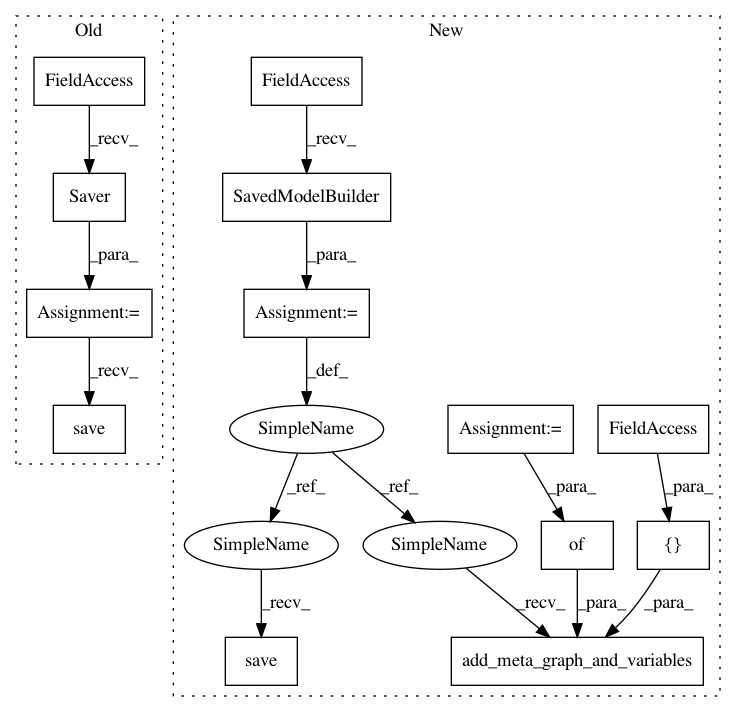

b18167d070cc0563998de54d54c8bd6757dfe7b3,art/classifiers/tensorflow.py,TFClassifier,save,#TFClassifier#Any#Any#,456
Before Change
if not os.path.exists(folder):
os.makedirs(folder)
saver = tf.train.Saver()
saver.save(self._sess, full_path)
logger.info("Model saved in path: %s.", full_path)
def __repr__(self):
repr_ = "%s(clip_values=%r, input_ph=%r, logits=%r, output_ph=%r, train=%r, loss=%r, learnign=%r, " \
After Change
if os.path.exists(full_path):
shutil.rmtree(full_path)
builder = saved_model.builder.SavedModelBuilder(full_path)
signature = predict_signature_def(inputs={"SavedInputPhD": self._input_ph},
outputs={"SavedOutputLogit": self._logits})
builder.add_meta_graph_and_variables(sess=self._sess, tags=[tag_constants.SERVING],
signature_def_map={"predict": signature})
builder.save()
logger.info("Model saved in path: %s.", full_path)
def __repr__(self):
In pattern: SUPERPATTERN
Frequency: 3
Non-data size: 13
Instances
Project Name: IBM/adversarial-robustness-toolbox
Commit Name: b18167d070cc0563998de54d54c8bd6757dfe7b3
Time: 2019-04-16
Author: M.N.Tran@ibm.com
File Name: art/classifiers/tensorflow.py
Class Name: TFClassifier
Method Name: save
Project Name: googledatalab/pydatalab
Commit Name: 15a86d278c6b0f8574cdd6e237f778faf2e002e1
Time: 2017-02-27
Author: qimingj@users.noreply.github.com
File Name: solutionbox/inception/datalab_solutions/inception/_model.py
Class Name: Model
Method Name: export
Project Name: GoogleCloudPlatform/cloudml-samples
Commit Name: 01ed847eea06300d278ffcf1214021b487d3d463
Time: 2017-03-07
Author: elibixby@google.com
File Name: flowers/trainer/model.py
Class Name: Model
Method Name: export